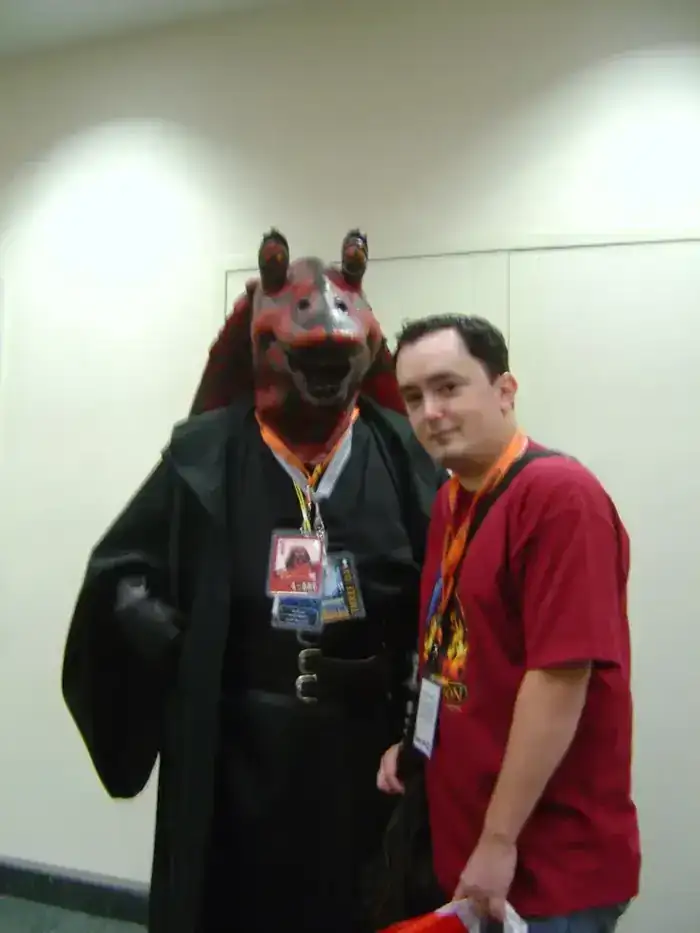

The theory
In 2015 a long post argued that Jar Jar Binks, the widely disliked comic character from The Phantom Menace, was in fact a Sith lord using apparent incompetence as cover: his gestures mirror those of Force users, he is present at key moments, and his clumsiness repeatedly produces strategic outcomes.
Maps, diagrams and images


The evidence
The argument is a reading of staging, framing and dialogue, and it is more careful than most fan theories. It is also not supported by anything the filmmakers have said: George Lucas and later creators have described the character as comic relief, and the theory's own authors have treated it as speculation.
The archive files it as fiction because that is what it is — an inventive reading of a film, offered as such.
Documented: the theory, its arguments and its reception.
Documented: the filmmakers' statements about the character.
Not established: any intended Sith identity.
The value: a demonstration of how much a careful reading can find.
The label: fiction.
Why it is in the archive
Because it is the most entertaining fan theory of the decade, and because it shows the difference between reading a text closely and claiming a fact about it.
Open resources on this topic
- PapersOpen-access articles: DOAJ · PubMed Central · Internet Archive Scholar
- BooksPublic-domain and borrowable copies: Open Library · Project Gutenberg · Google Books · Internet Archive
Cite this page
Momin, S. (2026). Darth Jar Jar. The Larger World Archive. https://drsamonline.github.io/LARGE_GLOBE/darth-jar-jar.htmlMomin, Sohil. “Darth Jar Jar.” The Larger World Archive, 2026, https://drsamonline.github.io/LARGE_GLOBE/darth-jar-jar.html.Momin, Sohil. “Darth Jar Jar.” The Larger World Archive, 2026. https://drsamonline.github.io/LARGE_GLOBE/darth-jar-jar.html.@misc{darth2026darth,
author = {Momin, Sohil},
title = {Darth Jar Jar},
year = {2026},
howpublished = {The Larger World Archive},
url = {https://drsamonline.github.io/LARGE_GLOBE/darth-jar-jar.html},
note = {Last reviewed 20 November 2026}
}Last reviewed 20 November 2026 · Corrections policy · this page is not peer reviewed
Sources for this page
- Wikipedia, “Jar Jar Binks” — the character and the theoryen.wikipedia.org
- Wikipedia, “Darth Binks” — the fan theoryen.wikipedia.org
- Wikipedia, “Star Wars: Episode I – The Phantom Menace” — the filmen.wikipedia.org
- Wikipedia, “Fan theory” — the genreen.wikipedia.org